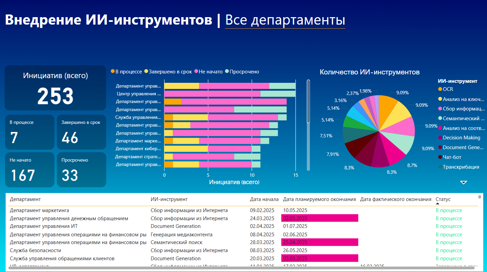

В рамках кейса был разработан дэшборд для отслеживания статусов проектов по внедрению ИИ-инструментов в бизнес-процессы Банка.
Инструментарий:
| SQL | SQL Server Management Studio |
| Power BI |
Цель: Создание инструмента, позволяющего в режиме реального времени мониторить текущий статус и прогресс проектов внедрения ИИ.
Результат: Интерактивный дэшборд в Power BI, отражающий статус всех проектов в рамках стратегии внедрения ИИ в Банке.
Для визуализации использовались данные, сформированные на основе стратегии внедрения ИИ-инструментов (пример данных: raw_data.csv)
Данные были предварительно загружены в базу на сервере (SSMS) для удобства обновления и масштабирования. Далее в Power BI было настроено подключение к серверу для автоматической загрузки и обработки информации.
Построение дэшборда
1. Для расчёта нестандартных визуальных элементов, таких как карточки с отображением количества проектов, использовались меры, написанные на языке DAX.
2. В таблице была реализована система условного форматирования столбца «Дата планируемого окончания»: ячейки с приближающимися дедлайнами подсвечиваются другим цветом для повышения наглядности и удобства восприятия.
Скачать дэшборд в формате .pdf: Dashboard_AI_projects.pdf
Скачать дэшборд в формате .pbix: Dashboard_AI_projects.pbix